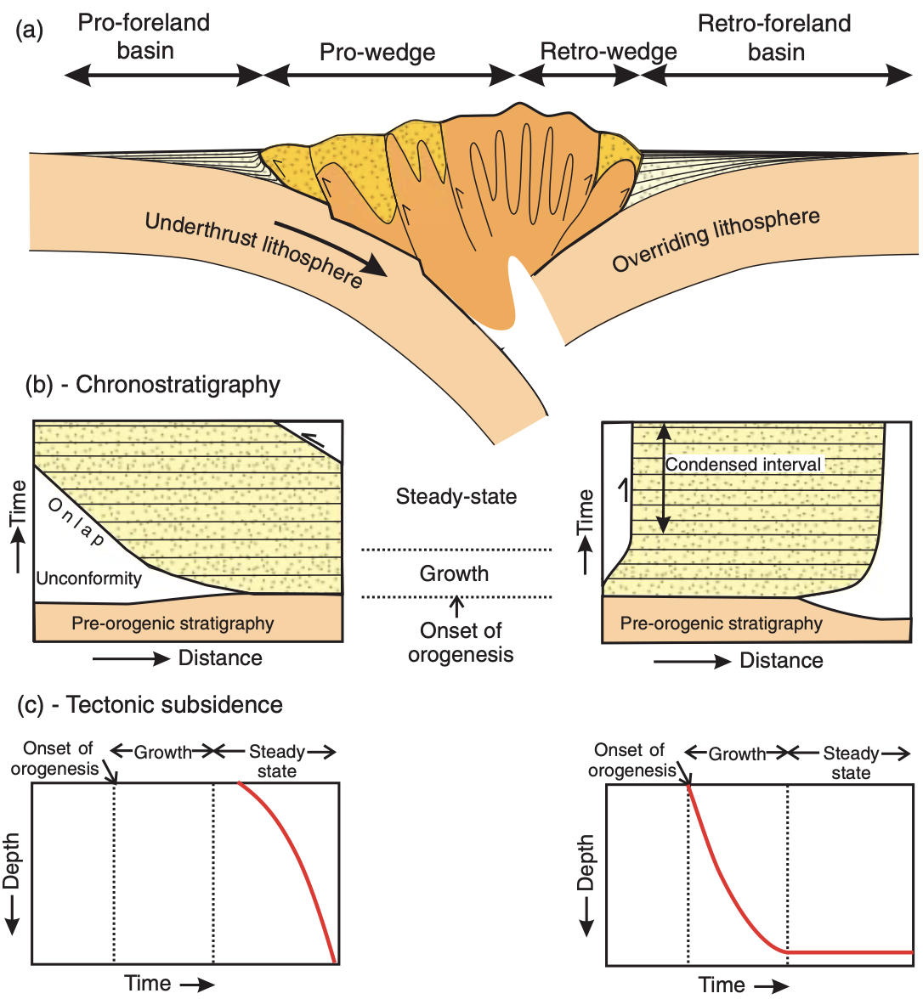
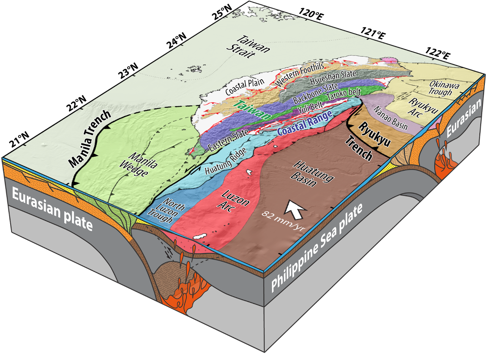
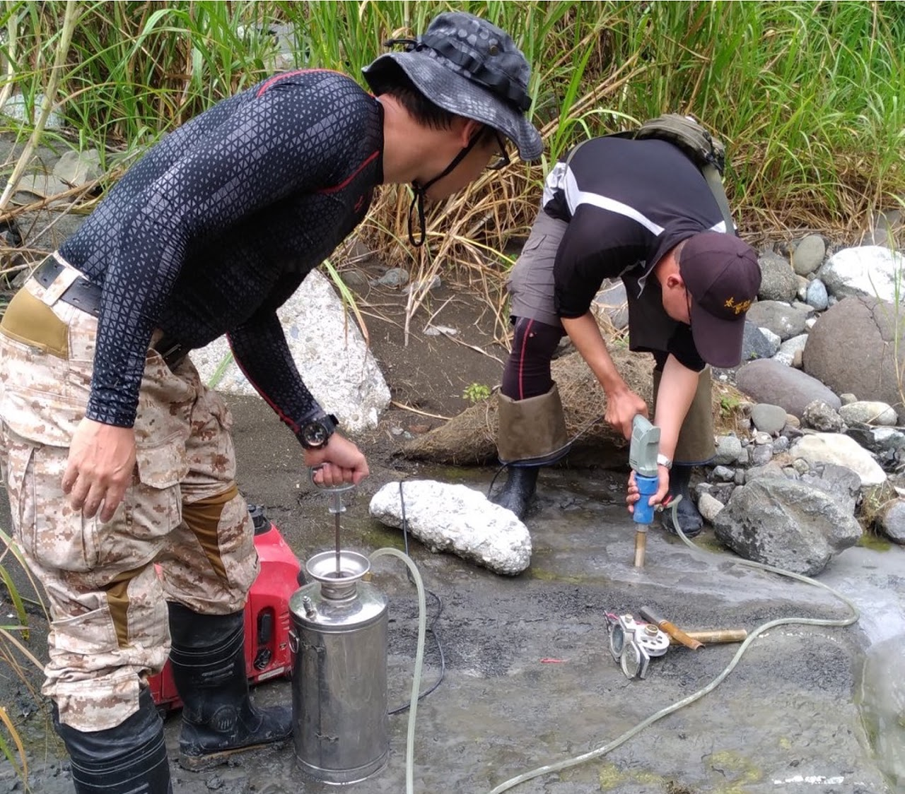

Crustal recycling at an active arc-continent collision suture

“The evolution of a sedimentary basin can be viewed as the result of a succession of discrete plate-tectonic settings and plate interactions whose effects blend into a continuum of development.” — Dickinson (1974)
Sedimentary records in peripheral foreland basins at either side of collisional margins provide critical constraints on the evolution of paleogeography and orogenic processes (Sinclair, 2012).
Arc-continent collision is widely considered as a major process in terrane accretion and continental growth over geologic time (Draut and Clift, 2012). However, the tectonic controls on development of its retro-foreland basin system are barely explored, and therefore the kinematics and processes of crustal deformation at the convergent interface between orogenic front and oceanic arc remain poorly understood.

The main island of Taiwan is a modern arc-continent collision zone, and the Coastal Range in the east, marked as a destructed forearc terrain at the plate suture, preserves a >7-km thick section of Plio-Pleistocene orogen-derived marine sedimentary rocks that unconformably overlies deeply subsided and recently exhumed Luzon arc basement. It provides a rare opportunity to investigate the evolution of syn-orogenic basins on the retro-side of an active arc-continent collision orogen.

Yet these basins have a highly debated history in basin subsidence, sediment fill, and structural inversion. Two major hypotheses have been proposed:
- Hypothesis A. Sediments are passively onlapped on an existing forearc basin floor that was progressively shut down and uplifted from north to south since ~5 Ma with limited intra-basin deformation (e.g., Chang et al., 2001; Chen, 1988; Huang et al., 2006).
- Hypothesis B. These basins are formed by flexural subsidence, disturbed by later syn-depositional tilting associated with the growth of thrust fronts, and exhumed simultaneously after ca. 1 Ma (e.g., Lundberg and Dorsey, 1988; Lai et al., 2021).
Summarized diagrams of proposed tectonic models (hypotheses A and B) for the eastern Taiwan sedimentary basin system (Lai et al., 2021).
To understand the basin evolution in eastern Taiwan, this proposed study aims to test these hypotheses by investigating the depositional age, stratigraphic architecture, process sedimentology, and structural geometries of the Coastal Range basins. I will conduct integrated studies including:
- Geological mapping
- Nannofossil biostratigraphy
- Rock paleomagnetism
- Tuff geochronology
- Lithofacies analysis
- Structural restoration
- Basin subsidence analysis

Related publications
- Lai, L.S.-H., Dorsey, R.J., Horng, C.-S., Chi, W.-R., Shea, K.-S., Yen, J.-Y., 2022. Extremely rapid up-and-down motions of island arc crust during arc-continent collision. Communications Earth & Environment 3, 100. https://doi.org/10.1038/s43247-022-00429-2
- Lai, L.S.-H., Dorsey, R.J., Horng, C.-S., Chi, W.-R., Shea, K.-S., Yen, J.-Y., 2021. Polygenetic mélange in the retrowedge foredeep of an active arc-continent collision, Coastal Range of eastern Taiwan. Sedimentary Geology 418, 105901. https://doi.org/10.1016/j.sedgeo.2021.105901
- Lai, L.S.-H., Ng, T.-W., Teng, L.S., 2018. Stratigraphic correlation of tuffaceous and psephitic strata in the Paliwan formation, southern Coastal Range of eastern Taiwan. Bulletin of the Central Geological Survey, Ministry of Economic Affairs of Taiwan, 1–32.
- Lai, L.S.-H., Teng, L.S., 2016. Geomorphologic and sedimentary features of the Chi-Shing-Tan gravel beach, Hualien, eastern Taiwan. Journal of Geographical Research, 1–26.
- Lai, L.S.-H., Teng, L.S., 2016. Stratigraphy and structure of the Tai-Yuan basin, southern Coastal Range, eastern Taiwan. Bulletin of the Central Geological Survey, Ministry of Economic Affairs of Taiwan, 45–76.
Other references
- Chang, C.P., Angelier, J., Huang, C.Y., and Liu, C.S. (2001) Structural evolution and significance of a mélange in a collision belt: the Lichi Mélange and the Taiwan arc-continent collision. Geological Magazine, 138(6), pp. 633–651.
- Chen, W.S. (1988) Development of deep-sea fan systems in Coastal Range Basin, eastern Taiwan. Science Reports of the National Taiwan University ACTA Geologica Taiwanica (26), pp. 37–56.
- Huang, C.-Y., Yuan, P.B., and Tsao, S.-J. (2006) Temporal and spatial records of active arc-continent collision in Taiwan: A synthesis. Geological Society of America Bulletin, 118(3–4), pp. 274–288.
- Dickinson, W.R. (1974) Plate tectonics and sedimentation. Dickinson, W.R. (Ed.), Tectonics and Sedimentation: SEPM Society for Sedimentary Geology.
- Draut, A.E., and Clift, P.D. (2012) Basins in arc-continental collisions. Tectonics of Sedimentary Basins: Recent Advances, pp. 347–368.
- Lundberg, N., and Dorsey, R. (1988) Synorogenic sedimentation and subsidence in a Plio-Pleistocene collisional basin, eastern Taiwan. Kleinspehn, K. and Paola, C. (Eds.), New Perspectives in Basin Analysis (pp. 265–280). New York: Springer.
- Sinclair, H. (2012) Thrust wedge/foreland basin systems. Busby, C. and Azor, A. (Eds.), Tectonics of Sedimentary Basins: Recent Advances (pp. 522–537). Chichester, UK: John Wiley & Sons, Ltd.